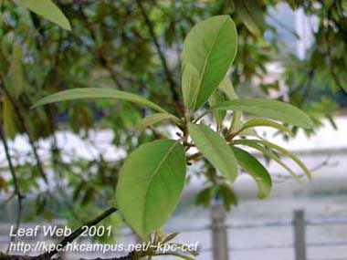
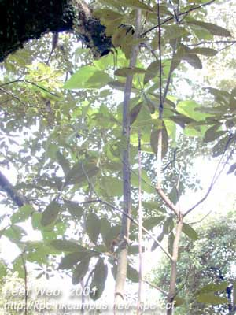
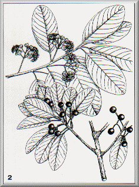

|
ECONOMICALLY
IMPORTANT PLANTS OF INDIA |
| Under-utilized Food and Fodder species and their wild relatives | Contributed by Ms.M.L Annapurna And Dr. Dhanapal, UAS, Bangalore |
Litsea glutinosa
Taxonomic Details

----- Correct Name
----- Classification
----- Synonyms
----- Common Names
Other Biological Details
----- Habit and Habitat
----- Diagnostic Features
----- Reproductive Biology
---------- Breeding System
---------- Phenology
---------- Pollinators
---------- Seed Biology
----------Seed Germination
------ Cultivation
----- Major Pests and Diseases
Economic Potential and Uses
----- Parts Used
----- Uses
----- Harvesting Practices
----- Produce and Products
----- Chemistry
----- Processing Techniques
----- Other uses
----- Economic Potential to the
Country
----- Export Potential
Miscellaneous Information
Literature

HABIT & HABITAT:

An evergreen shurb or tree and found throughout the India, grow near river
sides,semi evergreen forest,wet mixed forests,
Availability :
BioticZone: Western Ghats,
Misc: Hollong, Kalliassery, Salkumar,Tellicherry andTorsa.
Country: Australia, China, India and Sri Lanka.
Zone: East, North, North East, South and West zone.
State: Assam, Himachal Pradesh, Kerala, Maharashtra, Punjab and West Bengal.
District: Bombay and Cannanore.
Status :
Breeding System :
Phenology :
It flowers in April - May (01) and May-September
(02).
Pollinators: MAJOR PESTS & DISEASES
Seed Biology :
Seed Germination:
Cultivation:
Pests:
Diseases:
Economic
Potential and Uses
Parts used
Wood,Bark.
1. It can be used for furniture making.
Harvesting
Practices
Produce and Products
1. bark is used for making joss-sticks, raw
material for glue production, medicines
Healthcare Properties:
1. Wounds: Grind the bark of Litsea glutinosa to make a paste. Apply this paste on the wounds by any iron axe. This acts as an antiseptic cream. (B-28) [OR-1-2-202]
1. Sasya Sahyadri- A CD
on Plants of Western Ghats, 2003, K.N. Ganeshaiah.
.jpg){kind=link}
.jpg){kind=link}